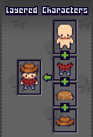

Character Types
The Character Management System supports two different character structures: Unified Characters and Layered Characters.
Both use the same animation system but differ in how their visual appearance is stored and customized.
Choosing the correct type depends on whether your characters need runtime customization.
Choosing a Character Type
| Feature | Unified Character | Layered Character |
|---|---|---|
| Spritesheets | One complete spritesheet | Multiple layered spritesheets |
| Runtime Customization | ❌ No | ✅ Yes |
| Setup Complexity | Simple | Moderate |
| Best For | Fixed characters or simple NPCs | Customizable characters or dynamic NPCs |
| Compatible with Character Creator | ❌ No | ✅ Yes |
Unified Characters
A Unified Character uses a single spritesheet containing the fully assembled character.

All animation frames and visuals are stored inside this one spritesheet.
Best Used For
- Characters with fixed appearances
- Story characters that never change
- Simple NPCs
- Projects that do not need customization systems
Unified characters are the simplest to create and manage, but they do not support runtime customization since the character is fully assembled beforehand.
Layered Characters
A Layered Character is built using multiple spritesheets. Each spritesheet represents one visual layer of the character.

At runtime the system stacks each layer together to produce the final character.
For example a character may contain:
- Body
- Outfit
- Hairstyle
- Accessory
When the character renders:
- The body renders first
- The outfit renders on top
- The hairstyle renders above that
- Accessories render last
The layer order can be configured inside the editor.
Requirements
All layer spritesheets must:
- Be the same resolution
- Use the same frame layout
- Align to the same animation frames
This ensures each animation frame matches across every layer.
Best Used For
- Character creators
- Equipment systems
- Customizable player characters
- Randomly generated NPCs
How Character Types Work
A Character Type defines the animation structure that all characters must follow.
It ensures that:
- All characters share the same animation layout
- A single Animator Controller can animate every character
- New characters can be added without rebuilding animation logic
This structure is defined using the Base Spritesheet.
The Character Type Asset
Character Types are implemented using Scriptable Objects.

The Character Type asset stores the core configuration used by all characters of that type.
This includes:
- Animation layout
- Base spritesheet
- Animator controller
- Rendering configuration
- Character type identifier
Note
A Character Type asset must exist before characters can be created.
Creating a Character Type
A new Character Type can be created by right-clicking the Project window and navigating to: Create > BlazerTech > Character Management System > Character Type
You will then choose whether the type is:
- Unified Character Type
- Layered Character Type
A Character Type can only create characters of the same type.

You would typically create a new Character Type when:
- Your characters use a different animation layout
- Your project contains multiple character systems
- You want separate customization setups
Character Type Setup
This section explains how to configure the fields inside the Character Type asset.
Character Type ID
A unique identifier for the Character Type.

This ID must be unique among all Character Types listed in the Active Character Types list.
If two Character Types share the same ID, initialization will fail at runtime.
Base Spritesheet
Defines the animation layout used by every character of this Character Type.

The Base Spritesheet contains all animation frames that characters of this type will use.
This spritesheet acts as a template for frame positions and animations.
All characters using the same Character Type must follow this layout.
Why All Characters Use the Same Base Spritesheet
The Character Shader uses the animation frames from the Base Spritesheet to determine which frame should be displayed.
Instead of changing the animation itself, the shader replaces the visual sprites with the character’s own spritesheet.
This allows:
- One Animator Controller to animate every character
- New characters to be added without creating new animations
- Consistent animation timing across all characters
For example:
| Base Spritesheet | Character Spritesheet | Result |
|---|---|---|
| Defines animation frames | Contains character visuals | Character animates using the shared layout |
Learn more about this system in Character Shader.
Required Import Settings
The Base Spritesheet must use the correct import settings to work properly.
| Setting | Value | Reason |
|---|---|---|
| Sprite Mode | Multiple | Allows the spritesheet to be sliced into animation frames |
| Compression | None (Recommended) | Prevents artifacts in pixel art |
| Filter Mode | Point (No Filter) | Keeps pixel art sharp |
These settings ensure the animation frames are imported correctly and displayed without visual distortion.
Spritesheet Layout Requirements
All character spritesheets for this Character Type must:
- Use the same frame size
- Use the same frame positions
- Contain the same animation frames
This guarantees that animations line up correctly across all characters.
Example
If the Base Spritesheet contains:
- Idle (4 frames)
- Walk (6 frames)
- Attack (5 frames)
Then every character spritesheet must contain those same frames in the same positions.
Pixels Per Unit
Defines the render scale of the character.

This value should match the Pixels Per Unit setting used in the Base Spritesheet.
Animator Controller (Optional)
All characters share the same animation layout, meaning one Animator Controller can animate every character of this type.

This removes the need to create separate Animator Controllers or Animator Override Controllers for each character.
See Character Animation Setup for instructions on configuring animations.
Active Character Types List
The Active Character Types list determines which Character Types are initialized when the game starts.
It can be found under: Project Settings > BlazerTech > Character Management System

Only Character Types in this list will be available at runtime.
When creating a new Character Type you will be prompted to add it to the list automatically.